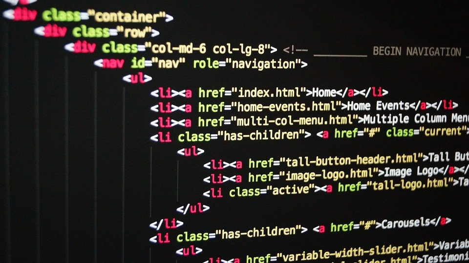

The Basic Language of the Web:HTML
posted by Emma fill on Monday,June 21st 2019
All modern websites and web applications are built using three fundamental technologies: HTML, CSS
and JavaScript.
These are the language of the web.
In this post, let's focus on HTML. We will learn what HTML is all about, and why you too should learn it.
What is HTML?
HTML stands for Hyper Text Markup Language. It's a markup language that web developers use to structure and describe the content of a webpage(not a programming language).
HTML consists of elements that descrobe different types of content: paaragraph, links, heading, images, video, etc. Web browsers understand HTML and render HTML code as websites.
In HTML, each element is made up of 3 parts:
- The opening tag
- The closing tag
- The actual element
You can learn more at the MDN Web Docs.
Why should you learn HTML?
There are countless reasons for learning the fundamental language of the web. Here are 5 of them.
- To be able to use the fundamental web dev language
- To hand-craft beautiful websites instead of relying on tools like wordpress or wix/li>
- To build web applications
- To impress friends
- To have fun
Hopefully you learned something new here. See you next time!